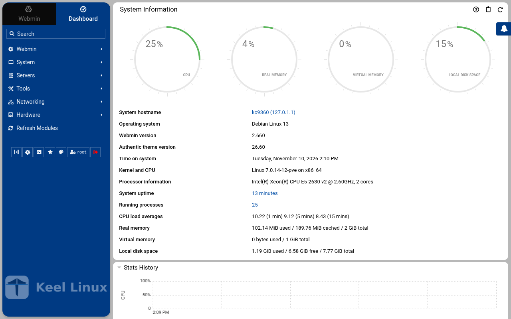
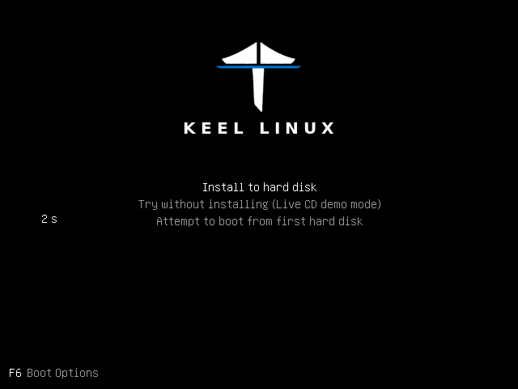
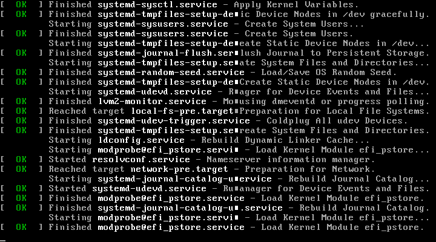
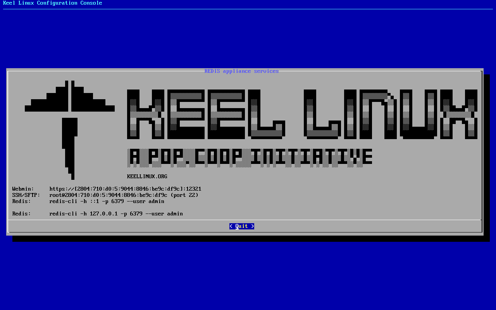

Appliances / Keel Redis
Keel RedisRedis 8.0
Keel release 19.0-13 · image debian-13-keel-redis_19.0-13_amd64.tar.zst
Redis database layer for Keel appliances, built on core. Compatible with TurnKey Linux appliances, and corresponding to the upstream appliance turnkeylinux-apps/redis for the database half of what that appliance is.
Install
LXC template, for Proxmox VE
debian-13-keel-redis_19.0-13_amd64.tar.zst
sha256 924779592724088e320f98c3163f730c896572ec2baf3601f330a4795040e1e3
With the Keel index
keel-pve gets the signed index of the Keel templates and checks the template against it. The Templates dialog of the Proxmox web interface does not show Keel templates. Install keel-pve from the Keel archive, suite trixie-testing, as its README says. Then run these commands on the Proxmox node:
keel-pve update keel-pve download local keel-redis
With the file
- Download the template, its
.sha512and its.sha512.asc. - Check the signature. Then check the digest.
- Copy the template to
/var/lib/vz/template/cache/on the Proxmox node.
curl -fLO https://mirror.keellinux.org/images/debian-13-keel-redis_19.0-13_amd64.tar.zst -O https://mirror.keellinux.org/images/debian-13-keel-redis_19.0-13_amd64.tar.zst.sha512 -O https://mirror.keellinux.org/images/debian-13-keel-redis_19.0-13_amd64.tar.zst.sha512.asc curl -fLO https://archive.keellinux.org/keel-images-keyring.asc sqv --keyring keel-images-keyring.asc debian-13-keel-redis_19.0-13_amd64.tar.zst.sha512.asc debian-13-keel-redis_19.0-13_amd64.tar.zst.sha512 sha512sum -c debian-13-keel-redis_19.0-13_amd64.tar.zst.sha512 cp debian-13-keel-redis_19.0-13_amd64.tar.zst /var/lib/vz/template/cache/
If sqv prints E71DB9C3CA6AC18075395CC3ED3A709C4F3E2F3C, the signature is good. It also prints "Missing key" for the main key of the project. This is expected.
Make the container
pct create 200 local:vztmpl/debian-13-keel-redis_19.0-13_amd64.tar.zst --hostname redis \ --unprivileged 1 --features nesting=1 \ --net0 name=eth0,bridge=vmbr0,ip6=auto
Start the container and log in on its console as root. The first boot asks its questions there.
ISO, for a virtual or a real machine
debian-13-keel-redis_19.0-13_amd64.iso
sha256 8d1d716db747bcd54d80e207be030f18a42af53c7ca53acf626e03cbe4b539b6
curl -fLO https://mirror.keellinux.org/images/debian-13-keel-redis_19.0-13_amd64.iso -O https://mirror.keellinux.org/images/debian-13-keel-redis_19.0-13_amd64.iso.sha512 -O https://mirror.keellinux.org/images/debian-13-keel-redis_19.0-13_amd64.iso.sha512.asc curl -fLO https://archive.keellinux.org/keel-images-keyring.asc sqv --keyring keel-images-keyring.asc debian-13-keel-redis_19.0-13_amd64.iso.sha512.asc debian-13-keel-redis_19.0-13_amd64.iso.sha512 sha512sum -c debian-13-keel-redis_19.0-13_amd64.iso.sha512
Boot the machine from the ISO and install. The first boot of the installed system asks the same questions as the template.
The first boot
The questions of the first boot, of all the modes and roles. A node asks only those of its mode and role (the guides below show each one):
- Root Password password
- Redis password password
- System Notifications
No password is copied between nodes: only the invite lines (decision 0076).
Services
redis-server, ssh, webmin, postfix, cron, monit
Addresses the commissioning checked
https://127.0.0.1:12321/
Screenshots

user root, the root secret


after the login: the page the login opened
Installation modes
Each column is one machine. Each row is one screen, in the order the machine showed it, with what the operator typed or chose. A secret is named, never shown.
Simple: one node
the LXC template, answered on the console (br1)
- 1
root password
the screen, as text
Connected to tty 1 Type <Ctrl+a q> to exit the console, <Ctrl+a Ctrl+a> to enter Ctrl+a itself press Enter within 5 s to answer first-boot questions Keel Linux Configuration Console KC9360 appliance services < Quit > Webmin: https://[2804:710:d0:5:be24:11ff:fe1d:cb4d]:12321SSH/SFTP: root@2804:710:d0:5:be24:11ff:fe1d:cb4d (port 22)Redis:redis-cli -h ::1 -p 6379 --user adminRedis:redis-cli -h 127.0.0.1 -p 6379 --user admin Keel Linux Configuration Console KC9360 appliance services < Quit > Webmin: https://[2804:710:d0:5:be24:11ff:fe1d:cb4d]:12321SSH/SFTP: root@2804:710:d0:5:be24:11ff:fe1d:cb4d (port 22)Redis:redis-cli -h ::1 -p 6379 --user adminRedis:redis-cli -h 127.0.0.1 -p 6379 --user admin Debian GNU/Linux 13 kc9360 tty1 kc9360 login: root Password: Keel Linux redis 19.0-trixie-amd64 IPv6 SSH: root@2804:710:d0:5:be24:11ff:fe1d:cb4d Welcome to kc9360, Keel Linux 19.0 (Debian 13/Trixie) System information for Tue Nov 10 13:57:48 2026 (UTC+0000) System load: 10.04 Memory usage: 9.0% Processes: 30 Swap usage: 0.0% Usage of /: 10.0% of 7.78GB Networking not configured This system is not initialized yet: run keel-init to set it up. For Advanced commandline config run: confconsole For more info see: https://github.com/Keel-Linux/confconsole Linux kc9360 7.0.14-12-pve #1 SMP PREEMPT_DYNAMIC PMX 7.0.14-12 (2026-08-11T11:05Z) x86_64 === Keel Linux - First boot configuration Root Password Please enter new password for the root account. Choose how to set this password: Generate A strong random password (recommended) Manual Type my own password < OK >Generate A strong random password (recommended)Manual Type my own password Keel Linux - First boot configuration Root Password Please enter new password for the root account. Password Requirements - must be at least 8 characters long - must contain characters from at least 3 of the following categories: uppercase, lowercase, numbers, symbols < OK >x
typed:
(the root secret) - 2
root password
the screen, as text
******** Keel Linux - First boot configuration Root Password Confirm password Password Requirements - must be at least 8 characters long - must contain characters from at least 3 of the following categories: uppercase, lowercase, numbers, symbols < OK >x
typed:
(the root secret) - 3
db password
the screen, as text
******** Keel Linux - First boot configuration kc9360.pop.coop Domain name xxx The name this machine is reached by, with its domain, xx for example blog.example.org. It becomes the hostname, xx the name /etc/hosts answers for this machine, and the xx domain a TLS certificate is requested for in xx confconsole.xxxx Leave the field empty to keep the name the machine has. xxxx Fully qualified domain name:x <Apply>x >fqdn: /etc/keel/instance.yaml already declares the name, not written === Keel - First boot configuration Redis password Enter the password for the Redis administrative account. Redis has no database account: this is the password of an ACL user, and the server keeps only its SHA-256. Choose how to set this password: Generate A strong random password (recommended) Manual Type my own password < OK >Generate A strong random password (recommended)Manual Type my own password Keel - First boot configuration Redis password Enter the password for the Redis administrative account. Redis has no database account: this is the password of an ACL user, and the server keeps only its SHA-256. Password Requirements - must be at least 8 characters long - must contain characters from at least 3 of the following categories: uppercase, lowercase, numbers, symbols < OK >x
typed:
(the db secret) - 4
db password
the screen, as text
******** Keel - First boot configuration Redis password Confirm password Password Requirements - must be at least 8 characters long - must contain characters from at least 3 of the following categories: uppercase, lowercase, numbers, symbols < OK >x
typed:
(the db secret) - 5
alert email
the screen, as text
********>Redis account 'admin' set from DB_PASS (24 characters), verified on [::1]:6379; a client with no secret is refused every key == Keel Linux - First boot configuration Installation mode < ok >x This node was installed in the Simple mode. The mode is chosen once (decision 0028), so this screen does notchange it.>keelfirstboot role: database.server.role is declared (standalone) keelfirstboot cloud: Keel Cloud is not available yet: no key is asked, and this node runs standalone. It is offered once /etc/keel/cloud-endpoint names the service. === Keel Linux - First boot configuration System Notifications and Critical Security Alerts Enable local system notifications (root@localhost) to be forwarded to your regular inbox. Notifications include security updates and system messages. Email: <Enable> < Skip >x
typed:
admin@example.org - 6
- 7
the ISO in a virtual machine (br1)
- 1
installer-boot

- 2
installer-boot

- 3
installer-boot

- 4
partitioning

typed:
<ret> - 5
separate boot

typed:
n - 6
- 7
erase

typed:
<ret> - 8
- 9
reboot

typed:
y - 10
medium

typed:
<ret><ret> - 11
root password-menu

typed:
m<ret> - 12
root password

typed:
(the root secret)<ret> - 13
root password

typed:
(the root secret)<ret> - 14
- 15
- 16
- 17
- 18
- 19
alert email

typed:
admin@example.org<ret> - 20
- 21
firstboot-screen

typed:
<ret> - 22
firstboot-end

- 23
- 24


Commissioning
6 passes on the sites BR1, BR2, 2026-11-10: 182 checks, all passed.
Every pass below passed every check (decision 0075). A page never shows an image that did not pass.
| Pass | Nodes | Date | Checks passed |
|---|---|---|---|
| the LXC template, answered on the console | br1 | 2026-11-10T13:56:14Z | 30 of 30 |
| the LXC template, described before the boot | br1 | 2026-11-10T14:10:17Z | 27 of 27 |
| the ISO in a virtual machine | br1 | 2026-11-10T13:56:17Z | 34 of 34 |
| the LXC template, answered on the console | br2 | 2026-11-10T13:56:15Z | 30 of 30 |
| the LXC template, described before the boot | br2 | 2026-11-10T14:10:18Z | 27 of 27 |
| the ISO in a virtual machine | br2 | 2026-11-10T13:56:18Z | 34 of 34 |